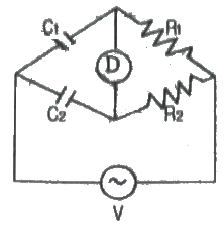
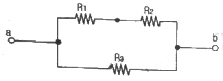
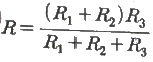
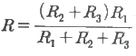
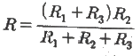
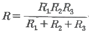
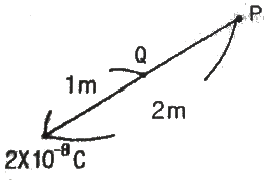
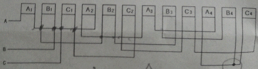

전기기능사 (2014-01-26 기출문제)
1과목: 전기 이론
1. 30㎌과 40㎌의 콘덴서를 병렬로 접속한 후 100V의 전압을 가했을 때 전 전하량은 몇 C 인가?
- 17 × 10-4
- 34 × 10-4
- 56 × 10-4
- 70 × 10-4
(정답률: 82%)

2. 자체 인덕턴스가 L1, L2인 두 코일을 직렬로 접속하였을 때 합성 인덕턴스를 나타내는 식은?(단, 두 코일간의 상호 인덕턴스는 M 이다)
- L1 + L2 ± M
- L1 - L2 ± M
- L1 + L2 ± 2M
- L1 - L2 ± 2M
(정답률: 87%)
3. 24 C의 전기량이 이동해서 144 J의 일을 했을 때 기전력은?
- 2 V
- 4 V
- 6 V
- 8 V
(정답률: 90%)
4. 전류의 발열작용과 관계가 있는 것은?
- 줄의 법칙
- 키르히호프의 법칙
- 옴의 법칙
- 플레밍의 법칙
(정답률: 89%)
5. 단상전력계 2대를 사용하여 2전력계법으로 3상 전력을 측정하고자 한다. 두 전력계의 지시값이 각각 P1, P2(W)이었다. 3상 전력 P(W)를 구하는 식으로 옳은 것은?
- P = √3(P1×P2)
- P = P1 - P2
- P = P1 × P2
- P = P1 + P2
(정답률: 73%)
6. 출력 P(kVA)의 단상변압기 2 대를 V결선한 때의 3상 출력(kVA)은?
- P
- √3P
- 2P
- 3P
(정답률: 68%)
7. i = 3sinωt+4sin(3ωt-θ)(A)로 표시되는 전류의 등가 사인파 최대값은?
- 2 A
- 3 A
- 4 A
- 5 A
(정답률: 66%)
8. 4×10-5 C과 6×10-5 C의 두 전하가 자유공간에 2m의 거리에 있을 때 그사이에 작용하는 힘은?
- 5.4 N, 흡입력이 작용한다.
- 5.4 N, 반발력이 작용한다.
- 7/9 N 흡인력이 작용한다.
- 7/9 N, 반발력이 작용한다.
(정답률: 68%)
9. 그림에서 평형 조건이 맞는 식은?

- C1R1=C2R2
- C1R2=C2R1
- C1C2=R1R2
- 1/(C1C2) = R1R2
(정답률: 56%)
10. 공기 중에서 +m (Wb)의 자극으로부터 나오는 자기력선의 총 수를 나타낸 것은?
- m
- μ0/m
- m/μ0
- μ0m
(정답률: 69%)
11. 어떤 저항(R)에 전압(V)를 가하니 전류(I)가 흘렀다. 이 회로의 저항(R)을 20%줄이면 전류(I)는 처음의 몇 배가 되는가?
- 0.8
- 0.88
- 1.25
- 2.04
(정답률: 68%)
12. 코일의 자체 인덕턴스(L)와 권수(N)의 관계로 옳은 것은?
- L ∝ N
- L ∝ N2
- L ∝ N3
- L ∝ 1/N
(정답률: 67%)
13. 다음 중 비유전율이 가장 큰 것은?
- 종이
- 염화비닐
- 운모
- 산화티탄 자기
(정답률: 60%)
14. 전자석의 특징으로 옳지 않은 것은?
- 전류의 방향이 바뀌면 전자석의 극도 바뀐다.
- 코일을 감은 횟수가 많을수록 강한 전자석이 된다.
- 전류를 많이 공급하면 무한정 자력이 강해진다.
- 같은 전류라도 코일 속에 철심을 넣으면 더 강한 전자석이 된다.
(정답률: 75%)
15. 기전력 1.5 V, 내부 저항이 0.2 Ω인 전지 5 개를 직렬로 연결하고 이를 단락하였을때의 단락 전류(A)는?
- 1.5
- 4.5
- 7.5
- 15
(정답률: 72%)
16. 그림과 같이 R1, R2, R3 의 저항 3개를 직병렬 접속되었을 때 합성저항은?





(정답률: 82%)
17. π/6(rad)는 몇 도인가?
- 30°
- 45°
- 60°
- 90°
(정답률: 78%)
18. 2F, 4F, 6F의 콘덴서 3 개를 병렬로 접속했을때의 합성 정전용량은 몇 F 인가?
- 1.5
- 4
- 8
- 12
(정답률: 85%)
19. 200V, 500W의 전열기를 220V 전원에 사용하였다면 이때의 전력은?
- 400W
- 500W
- 550W
- 6⑤W
(정답률: 47%)
20. 도면과 같이 공기 중에 놓인 2 × 10-8 C의 전하에서 2m 떨어진 점 P와 1m 떨어진 점 Q 와의 전위차는 몇 V 인가?

- 80V
- 90V
- 100V
- 110V
(정답률: 73%)
2과목: 전기 기기
21. 대지전압 150V 초과 300V 이하인 저압전로의 절연저항[MΩ) 값은 얼마 이상인가?
- 0.1
- 0.2
- 0.4
- 0.8
(정답률: 59%)
22. 전압변동률이 적고 자여자이므로 다른 전원이 필요 없으며, 계자저항기를 사용한 전압조정이 가능하므로 전기 화학용, 전지의 충전용 발전기로 가장 적합한 것은?
- 타여자 발전기
- 직류 복권발전기
- 직류 분권발전기
- 직류 직권발전기
(정답률: 30%)
23. 병렬운전 중인 동기 임피던스 5Ω 인 2대의 3상 동기발전기의 유도기전력에 200V의 전압차이가 있다면 무효순환 전류[A]는?
- 5
- 10
- 20
- 40
(정답률: 55%)
24. 인버터(inverter)란?
- 교류를 직류로 변환
- 직류를 교류로 변환
- 교류를 교류로 변환
- 직류를 직류로 변환
(정답률: 75%)
25. 2극의 직류발전기에서 코일변의 유효길이 l[m], 공극의 평균자속밀도 B[wb/m2], 주변속도 v[m/s] 일 때 전기자 도체 1개에 유도되는 기전력의 평균값은 e[V]은?
- e=Blv[V]
- e=sinωt[V]
- e=2Bsinωt[V]
- e=v2Bl[V]
(정답률: 64%)
26. 권수비 30인 변압기의 저압측 전압이 8V인 경우 극성시험에서 가극성과 감극성의 전압차이는 몇 [V]인가?
- 24
- 16
- 8
- 4
(정답률: 50%)
27. 다음 중 턴오프(소호)가 가능한 소자는?
- GTO
- TRIAC
- SCR
- LASCR
(정답률: 73%)
28. 3상 유도전동기의 회전원리를 설명한 것 중 틀린 것은?
- 회전자의 회전속도가 증가하면 도체를 관통하는 자속수는 감소한다.
- 회전자의 회전속도가 증가하면 슬립도 증가한다.
- 부하를 회전시키기 위해서는 회전자의 속도는 동기속도 이하로 운전되어야 한다.
- 3상 교류전압을 고정자에 공급하면 고정자 내부에서 회전 자기장이 발생된다.
(정답률: 49%)
29. 직류 분권발전기를 동일 극성의 전압을 단자에 인가하여 전동기로 사용하면?
- 동일 방향으로 회전한다.
- 반대 방향으로 회전한다.
- 회전하지 않는다.
- 소손된다.
(정답률: 53%)
30. 변압기 절연물의 열화 정도를 파악하는 방법으로서 적절하지 않은 것은?
- 유전정접
- 유중가스분석
- 접지저항측정
- 흡수전류나 잔류전류측정
(정답률: 58%)
31. 변압기의 퍼센트 저항강하가 3%, 퍼센트 리액턴스 강하가 4% 이고, 역률이 80% 지상이다. 이 변압기의 전압 변동률[%]은?
- 3.2
- 4.8
- 5.0
- 5.6
(정답률: 58%)
32. 병렬 운전 중인 두 동기 발전기의 유도 기전력이 2000V, 위상차 60°, 동기 리액턴스 100Ω 이다. 유효 순환전류[A]는?
- 5
- 10
- 15
- 20
(정답률: 42%)
33. 송배전계통에 거의 사용되지 않는 변압기 3상 결선방식은?
- Y - △
- Y - Y
- △ - Y
- △ - △
(정답률: 57%)
34. 3상 동기발전기에서 전기자 전류가 무부하 유도기전력보다 π/2[rad] 앞선 경우(Xc만의 부하)의 전기자 반작용은?
- 횡축반작용
- 증자작용
- 감자작용
- 편자작용
(정답률: 67%)
35. 직류 전동기의 특성에 대한 설명으로 틀린 것은?
- 직권전동기는 가변 속도 전동기이다.
- 분권전동기에서는 계자 회로에 퓨즈를 사용하지 않는다.
- 분권전동기는 정속도 전동기이다.
- 가동 복권전동기는 기동시 역회전할 염려가 있다.
(정답률: 49%)
36. 3상 동기 전동기의 토크에 대한 설명으로 옳은 것은?
- 공급전압 크기에 비례한다.
- 공급전압 크기의 제곱에 비례한다.
- 부하각 크기에 반비례한다.
- 부하각 크기의 제곱에 비례한다.
(정답률: 39%)
37. 다음은 3상 유도전동기 고정자 권선의 결선도를 나타낸 것이다. 맞는 사항을 고르시오(그림파일이 조금 불량합니다. 양해 부탁 드립니다. 추후 다시 복원하여 두겠습니다.)

- 3상 2극, Y결선
- 3상 4극, Y 결선
- 3상 2극, △결선
- 3상 4극, △ 결선
(정답률: 67%)
38. 동기 발전기의 난조를 방지하는 가장 유효한 방법은?
- 회전자의 관성을 크게 한다.
- 제동 권선을 자극면에 설치한다.
- Xs를 작게 하고 동기화력을 크게 한다.
- 자극 수를 적게 한다.
(정답률: 71%)
39. 직류발전기에서 계자의 주된 역할은?
- 기전력을 유도한다.
- 자속을 만든다.
- 정류작용을 한다.
- 정류자면에 접촉한다.
(정답률: 64%)
40. 계전기가 설치된 위치에서 고장점까지의 임피던스에 비례하여 동작하는 보호계전기는?
- 방향단락 계전기
- 거리 계전기
- 단락회로 선택 계전기
- 과전압 계전기
(정답률: 59%)
3과목: 전기 설비
41. 자가용 전기설비의 보호 계전기의 종류가 아닌 것은?
- 과전류계전기
- 과전압계전기
- 부족전압계전기
- 부족전류계전기
(정답률: 50%)
42. 애자사용 공사에서 전선의 지지점 간의 거리는 전선을 조영재의 위면 또는 옆면에 따라 붙이는 경우에는 몇[m] 이하인가?
- 1
- 2
- 2.5
- 3
(정답률: 54%)
43. 불연성 먼지가 많은 장소에서 시설할 수 없는 옥내 배선 공사 방법은?
- 금속관 공사
- 금속제 가요 전선관 공사
- 두께가 1.2[mm]인 합성수지관 공사
- 애자 사용 공사
(정답률: 46%)
44. 펜치로 절단하기 힘든 굵은 전선의 절단에 사용되는 공구는?
- 파이프 렌치
- 파이프 커터
- 클리퍼
- 와이어 게이지
(정답률: 66%)
45. 연선 결정에 있어서 중심 소선을 뺀 총수가 2층이다. 소선의 총수 N은 얼마인가?
- 45
- 39
- 19
- 9
(정답률: 71%)
46. 사용전압이 440[V]인 3상 유도전동기의 외함접지 공사시 접지선의 굵기는 공칭단면적 몇[mm2] 이상의 연동선이어야 하는가?(오류 신고가 접수된 문제입니다. 반드시 정답과 해설을 확인하시기 바랍니다.)
- 2.5
- 6
- 10
- 16
(정답률: 32%)
47. 교류 차단기에 포함되지 않는 것은?
- GCB
- HSCB
- VCB
- ABB
(정답률: 60%)
48. 옥내배선 공사 작업 중 접속함에 쥐꼬리 접속을 할 때 필요한 것은?
- 커플링
- 와이어커넥터
- 로크너트
- 부싱
(정답률: 68%)
49. 일반적으로 학교 건물이나 은행 건물 등의 간선의 수용률은 얼마인가?
- 50[%]
- 60[%]
- 70[%]
- 80[%]
(정답률: 58%)
50. 사용전압 15kV 이하의 특고압 가공전선로의 중성선의 접지선을 중성선으로부터 분리하였을 경우 1 km 마다의 중성선과 대지 사이의 합성 전기저항 값은 몇 [Ω]이하로 하여야 하는가?
- 30
- 100
- 150
- 300
(정답률: 31%)
51. 저압크레인 또는 호이스트 등의 트롤리선을 애자사용 공사에 의하여 옥내의 노출장소에 시설하는 경우 트롤리선의 바닥에서의 최소 높이는 몇 [m] 이상으로 설치하는가?
- 2
- 2.5
- 3
- 3.5
(정답률: 38%)
52. 계기용 변류기의 약호는?
- CT
- WH
- CB
- DS
(정답률: 69%)
53. 가공전선로의 지지물에서 다른 지지물을 거치지 아니하고 수용장소의 인입선 접속점에 이르는 가공 전선을 무엇이라 하는가?
- 옥외 전선
- 연접 인입선
- 가공 인입선
- 관등회로
(정답률: 68%)
54. 간선에서 접속하는 전동기의 정격전류의 합계가 100[A]인 경우에 간선의 허용전류가 몇 [A]인 전선의 굵기를 선정하여야 하는가?
- 100
- 110
- 125
- 200
(정답률: 59%)
55. 동전선의 직선접속(트위스트조인트)은 몇 [mm2]이하의 전선이어야 하는가?
- 2.5
- 6
- 10
- 16
(정답률: 65%)
56. 관을 시설하고 제거하는 것이 자유롭고 점검 가능한 은폐장소에서 가요전선관을 구부리는 경우 곡률 반지름은 2종 가요전선관 안지름의 몇 배 이상으로 하여야 하는가?
- 10
- 9
- 6
- 3
(정답률: 39%)
57. 옥외용 비닐절연전선의 약호는?
- OW
- DV
- NR
- FTC
(정답률: 80%)
58. 경질 비닐 전선관 1본의 표준 길이[m]는?
- 3
- 3.6
- 4
- 5.5
(정답률: 46%)
59. 차량, 기타 중량물의 하중을 받을 우려가 있는 장소에 지중선로를 직접 매설식으로 매설하는 경우 매설 깊이는?(관련 규정 개정전 문제로 여기서는 기존 정답인 4번을 누르면 정답 처리됩니다. 자세한 내용은 해설을 참고하세요.)
- 60cm 미만
- 60cm 이상
- 120cm 미만
- 120cm 이상
(정답률: 71%)
60. 토지의 상황이나 기타 사유로 인하여 보통지선을 시설할 수 없을 때 전주와 전주간 또는 전주와 지주간에 시설할 수 있는 지선은?
- 보통지선
- 수평지선
- Y지선
- 궁지선
(정답률: 49%)
두 콘덴서의 용량을 각각 C1, C2라고 하면, 병렬 접속으로 인해 총 용량 C는 다음과 같다.
C = C1 + C2 = 30 × 10-6 + 40 × 10-6 = 70 × 10-6 (F)
전압 V가 가해지면 각 콘덴서에 저장된 전하량 Q1, Q2는 다음과 같다.
Q1 = C1 × V = 30 × 10-6 × 100 = 3 × 10-3 (C)
Q2 = C2 × V = 40 × 10-6 × 100 = 4 × 10-3 (C)
따라서 총 전하량 Q는 다음과 같다.
Q = Q1 + Q2 = 3 × 10-3 + 4 × 10-3 = 7 × 10-3 (C)
하지만 문제에서는 단위를 C로 요구하고 있으므로, 위 결과를 10-4로 나누어 준다.
Q = 7 × 10-3 C = 70 × 10-4 C
따라서 정답은 "70 × 10-4"이다.